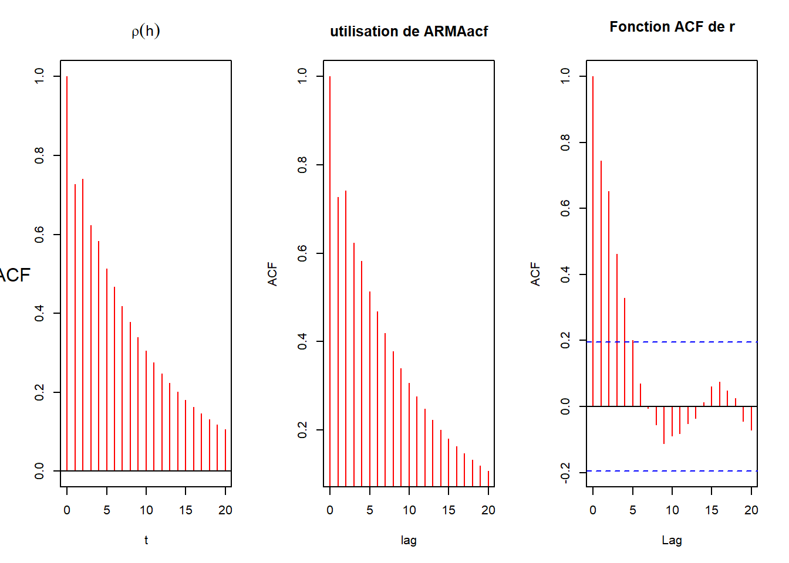

─ Session info ───────────────────────────────────────────────────────────────
setting value
version R version 4.2.1 (2022-06-23 ucrt)
os Windows 10 x64 (build 22631)
system x86_64, mingw32
ui RTerm
language (EN)
collate French_France.utf8
ctype French_France.utf8
tz Europe/Paris
date 2025-02-27
pandoc 3.2 @ C:/Program Files/RStudio/resources/app/bin/quarto/bin/tools/ (via rmarkdown)
─ Packages ───────────────────────────────────────────────────────────────────
package * version date (UTC) lib source
dplyr * 1.1.4 2023-11-17 [1] CRAN (R 4.2.3)
ggplot2 * 3.5.1 2024-04-23 [1] CRAN (R 4.2.3)
gridExtra * 2.3 2017-09-09 [1] CRAN (R 4.2.1)
[1] C:/Users/cleme/AppData/Local/R/win-library/4.2
[2] C:/Program Files/R/R-4.2.1/library
──────────────────────────────────────────────────────────────────────────────
EXERCICE 3 :
QUESTION 2 : Tracer les valeurs des l’ACF \(\rho(h)\) pour \(h = 1, 2\) . Vérifier vos résultats en utilisant la fonction ARMAacf.
Show the code
# On pose nos paramètresa1 =c(1.6, -0.4, -1.2)a2 =c(0.64, -0.45, 0.85)
Show the code
ARMAacf(ar =c(-a1[1], -a2[1]), ma =0, lag.max =2, pacf =FALSE)
0 1 2
1.0000000 -0.9756098 0.9209756
Show the code
ARMAacf(ar =c(-a1[2], -a2[2]), ma =0, lag.max =2, pacf =FALSE)
0 1 2
1.0000000 0.7272727 0.7409091
Show the code
ARMAacf(ar =c(-a1[3], -a2[3]), ma =0, lag.max =2, pacf =FALSE)
0 1 2
1.00000000 0.64864865 -0.07162162
Show the code
# lag.max = n fait calculer et afficher les n premières valeurs en partant de 0
Pour \(h = 1, 2\) on retrouve bien les valeurs calculées à la question 1.
BONUS :
On se propose de Généraliser en comparant les fonctions calculés en question 1 avec ARMAacf et la fonction acf de r, \(\forall h\).
Show the code
# On code notre fonction AR(2)n =100AR2 =function(n, a, b) { eps =rnorm(n +100) x =rnorm(n +100) #c'est pour donner la taille mais après on remplacera toute les valeurs# on suppose que X_0 est une rnormfor (i in (3:(n +100))) { x[i] = eps[i] - a * x[i -1] - b * x[i -2] } X_final = x[101:(n +100)]return(X_final) }
Show the code
# On code des fonction pour définir \rho à partir des calculs de la question 1rho1 =function(h){ r = (-5/4)^(-h) * (1+ h * (9/41))return(r)}rho2 =function(h){ r = (135/154) * (9/10)^h + (19/154) * (-1)^h * (1/2)^hreturn(r)}rho3 =function(h){ mod_z1 =sqrt(340/289) arg_z1 =atan(7/6) A = ( ( (24/37) *sqrt(30/17) -cos(atan(7/6)) /sin(atan(7/6))) )^2 c1 =-sqrt(1+A) c2 =acos(1/c1) r = c1 * mod_z1^(-h) *cos(h * arg_z1 + c2)return(r)}

EXERCICE 5 :
QUESTION 3 : Pour les modèles AR(2) définis à l’exercice 3, Simuler une trajectoire (avec \(n=100\)) pour les 3 modèles, puis calculer et représenter le prédicteur pour \(h=1,...,10\) (avec un intervalle de confiance).
On se base sur les 3 processus AR(2) définit en questions 3
Show the code
# fonction pour simuler et prévoirsimu_and_pred =function(coef1, coef2){# simulations X_t =AR2(n, coef1, coef2) # On utilise notre fonction AR2# prévisions Prev =vector("numeric", length =12) Prev[1] = X_t[n-1] # horizon h = -1 Prev[2] = X_t[n] # horizon h = 0# horizon h = 1, ..., 10for(k in3:12){ Prev[k] =-coef1 * Prev[k-1] -coef2 * Prev[k-2] }# erreurs# ARMAtoMA donne (psi_1, ..., psi_lag.max) :# il faut donc ajouter psi_0 = 1 erreurs =cumsum(c(1, ARMAtoMA(ar =c(-coef1,- coef2), lag.max =9)^2))# Intervalles de prévision :# IC à 95% alpha_95 =0.05 q_alpha_95 =qnorm(1- alpha_95/2)# bornes inf des intervalles de prévison l_95 = Prev[3:12] - q_alpha_95 *sqrt(erreurs) # bornes sup des intervalles de prévison u_95 = Prev[3:12] + q_alpha_95 *sqrt(erreurs) # IC à 80% alpha_80 =0.2 q_alpha_80 =qnorm(1- alpha_80/2) l_80 = Prev[3:12] - q_alpha_80 *sqrt(erreurs) u_80 = Prev[3:12] + q_alpha_80 *sqrt(erreurs) return(list(X_t = X_t, Prev = Prev[3:12], lower =list(l_80 = l_80, l_95 = l_95),upper =list(u_80 = u_80, u_95= u_95)))}
Source Code
---title: "Fiche 04"author: "Clément Poupelin"date: "2025-02-xx"date-modified: "`r Sys.Date()`"format: html: embed-resources: false toc: true code-fold: true code-summary: "Show the code" code-tools: true toc-location: right page-layout: article code-overflow: wraptoc: truenumber-sections: falseeditor: visualcategories: ["categorie 1", "cotegorie 2"]image: ""description: "Description"---# Intervenant.e.s### Rédaction- **Clément Poupelin**, [clementjc.poupelin\@gmail.com](mailto:clementjc.poupelin@gmail.com){.email}\### Relecture- # Setup:::: panel-tabset## Packages```{r, setup, warning=FALSE, message=FALSE}# Donnéeslibrary(dplyr) # manipulation des données# Plots## ggplotlibrary(ggplot2)library(gridExtra)```## Fonctions::: panel-tabset### Fonction 1### Fonction 2:::## Seed::::# Données# Analyse::: callout-noteMETTRE LES REMARQUES:::::: callout-warningMETTRE LES POINTS D'ATTENTION::::::: success-header::: success-icon:::Résultats::::::: successMETTRE LES CONCLUSIONS:::# Conclusion# Session info```{r}sessioninfo::session_info(pkgs ="attached")``````{r, include=FALSE}# chargement des packages et scripts nécessaireslibrary(astsa)library(lmtest)library(latex2exp)library(tseries)```# **EXERCICE 3 : **<br>#### QUESTION 2 : Tracer les valeurs des l’ACF $\rho(h)$ pour $h = 1, 2$ . Vérifier vos résultats en utilisant la fonction **ARMAacf**.<br>```{r}# On pose nos paramètresa1 =c(1.6, -0.4, -1.2)a2 =c(0.64, -0.45, 0.85)``````{r}ARMAacf(ar =c(-a1[1], -a2[1]), ma =0, lag.max =2, pacf =FALSE) ARMAacf(ar =c(-a1[2], -a2[2]), ma =0, lag.max =2, pacf =FALSE)ARMAacf(ar =c(-a1[3], -a2[3]), ma =0, lag.max =2, pacf =FALSE)# lag.max = n fait calculer et afficher les n premières valeurs en partant de 0```Pour $h = 1, 2$ on retrouve bien les valeurs calculées à la question 1.#### **BONUS** :<br>On se propose de Généraliser en comparant les fonctions calculés en question 1 avec **ARMAacf** et la fonction **acf** de r, $\forall h$. ```{r}# On code notre fonction AR(2)n =100AR2 =function(n, a, b) { eps =rnorm(n +100) x =rnorm(n +100) #c'est pour donner la taille mais après on remplacera toute les valeurs# on suppose que X_0 est une rnormfor (i in (3:(n +100))) { x[i] = eps[i] - a * x[i -1] - b * x[i -2] } X_final = x[101:(n +100)]return(X_final) }``````{r, echo=FALSE}par(mfrow=c(3, 1))for (i in 1:3){ plot(ts(AR2(n, a1[i], a2[i])), main = TeX(paste("$X_t + $",a1[i],"$X_{t-1} +$", a2[i], "$X_{t-2} = w_t$")), col = "purple", ylab = "") mtext(TeX("$X_t$"), side = 2, line = 2, las = 1)}par(mfrow=c(1, 1))``````{r}# On code des fonction pour définir \rho à partir des calculs de la question 1rho1 =function(h){ r = (-5/4)^(-h) * (1+ h * (9/41))return(r)}rho2 =function(h){ r = (135/154) * (9/10)^h + (19/154) * (-1)^h * (1/2)^hreturn(r)}rho3 =function(h){ mod_z1 =sqrt(340/289) arg_z1 =atan(7/6) A = ( ( (24/37) *sqrt(30/17) -cos(atan(7/6)) /sin(atan(7/6))) )^2 c1 =-sqrt(1+A) c2 =acos(1/c1) r = c1 * mod_z1^(-h) *cos(h * arg_z1 + c2)return(r)}``````{r, echo=FALSE}par(mfrow=c(1, 1))plot(ts(AR2(n, a1[1], a2[1])), main = TeX(paste("$X_t + $",a1[1],"$X_{t-1} +$", a2[1], "$X_{t-2} = w_t$")), col = "purple", ylab = "")mtext(TeX("$X_t$"), side = 2, line = 2, las = 1)par(mfrow=c(1, 3))t = 0:nplot(t, rho1(t), col="red", main = TeX("$rho(h)$"), type = "h", ylab = "", xlim = c(0,20))mtext("ACF", side = 2, line = 2, las = 1)abline(h = 0)#abline(h = -0.976, col = "blue") #rho(1)#abline(h = 0.921, col = "blue") #rho(2)plot(0:20, ARMAacf(ar = c(-a1[1], -a2[1]), ma = 0, lag.max = 20, pacf = FALSE), main = "utilisation de ARMAacf", type="h", xlab="lag", ylab = "ACF", col = "red")abline(h=0)## ATTENTION AU SIGNE DES COEFF DANS ARMAacf acf(AR2(n, a1[1], a2[1]), main = "Fonction ACF de r", col = "red")par(mfrow=c(1, 1))par(mfrow=c(1, 1))plot(ts(AR2(n, a1[2], a2[2])), main = TeX(paste("$X_t + $",a1[2],"$X_{t-1} +$", a2[2], "$X_{t-2} = w_t$")), col = "purple", ylab = "")mtext(TeX("$X_t$"), side = 2, line = 2, las = 1)par(mfrow=c(1, 3))plot(t, rho2(t), col="red", main = TeX("$rho(h)$"), type = "h", ylab = "", xlim = c(0,20))mtext("ACF", side = 2, line = 2, las = 1)abline(h = 0)plot(0:20, ARMAacf(ar = c(-a1[2], -a2[2]), ma = 0, lag.max = 20, pacf = FALSE), main = "utilisation de ARMAacf", type="h", xlab="lag", ylab = "ACF", col = "red")abline(h=0)## ATTENTION AU SIGNE DES COEFF DANS ARMAacf acf(AR2(n, a1[2], a2[2]), main = "Fonction ACF de r", col = "red")par(mfrow=c(1, 1))par(mfrow=c(1, 1))plot(ts(AR2(n, a1[3], a2[3])), main = TeX(paste("$X_t + $",a1[3],"$X_{t-1} +$", a2[3], "$X_{t-2} = w_t$")), col = "purple", ylab = "")mtext(TeX("$X_t$"), side = 2, line = 2, las = 1)par(mfrow=c(1, 3))plot(t, rho3(t), col="red", main = TeX("$rho(h)$"), type = "h", ylab = "", xlim = c(0,20))mtext("ACF", side = 2, line = 2, las = 1)abline(h = 0)plot(0:20, ARMAacf(ar = c(-a1[3], -a2[3]), ma = 0, lag.max = 20, pacf = FALSE), main = "utilisation de ARMAacf", type="h", xlab="lag", ylab = "ACF", col = "red")abline(h=0)## ATTENTION AU SIGNE DES COEFF DANS ARMAacf acf(AR2(n, a1[3], a2[3]), main = "Fonction ACF de r", col = "red")par(mfrow=c(1, 1))```<br># **EXERCICE 5 : **<br>#### QUESTION 3 : Pour les modèles AR(2) définis à l’exercice 3, Simuler une trajectoire (avec $n=100$) pour les 3 modèles, puis calculer et représenter le prédicteur pour $h=1,...,10$ (avec un intervalle de confiance). <br>On se base sur les 3 processus AR(2) définit en questions 3```{r}# fonction pour simuler et prévoirsimu_and_pred =function(coef1, coef2){# simulations X_t =AR2(n, coef1, coef2) # On utilise notre fonction AR2# prévisions Prev =vector("numeric", length =12) Prev[1] = X_t[n-1] # horizon h = -1 Prev[2] = X_t[n] # horizon h = 0# horizon h = 1, ..., 10for(k in3:12){ Prev[k] =-coef1 * Prev[k-1] -coef2 * Prev[k-2] }# erreurs# ARMAtoMA donne (psi_1, ..., psi_lag.max) :# il faut donc ajouter psi_0 = 1 erreurs =cumsum(c(1, ARMAtoMA(ar =c(-coef1,- coef2), lag.max =9)^2))# Intervalles de prévision :# IC à 95% alpha_95 =0.05 q_alpha_95 =qnorm(1- alpha_95/2)# bornes inf des intervalles de prévison l_95 = Prev[3:12] - q_alpha_95 *sqrt(erreurs) # bornes sup des intervalles de prévison u_95 = Prev[3:12] + q_alpha_95 *sqrt(erreurs) # IC à 80% alpha_80 =0.2 q_alpha_80 =qnorm(1- alpha_80/2) l_80 = Prev[3:12] - q_alpha_80 *sqrt(erreurs) u_80 = Prev[3:12] + q_alpha_80 *sqrt(erreurs) return(list(X_t = X_t, Prev = Prev[3:12], lower =list(l_80 = l_80, l_95 = l_95),upper =list(u_80 = u_80, u_95= u_95)))}``````{r, echo=FALSE}sim.pred_1 = simu_and_pred(a1[1], a2[1])sim.pred_2 = simu_and_pred(a1[2], a2[2])sim.pred_3 = simu_and_pred(a1[3], a2[3])plot.ts(sim.pred_1[["X_t"]], xlim=c(0,110), ylim = c(-15,15))# IC à 95%polygon(c(100:110, rev(100:110)), c(sim.pred_1[['X_t']][100], sim.pred_1[['lower']][['l_95']], sim.pred_1[['upper']][['u_95']], sim.pred_1[['X_t']][100]), col=rgb(0, 0, 1,0.2), border = F)# IC à 80%polygon(c(100:110, rev(100:110)), c(sim.pred_1[['X_t']][100], sim.pred_1[['lower']][['l_80']], sim.pred_1[['upper']][['u_80']], sim.pred_1[['X_t']][100]), col=rgb(0, 0, 1,0.2), border = F) # trajectoire des prévisionslines(100:110, c(sim.pred_1[['X_t']][100], sim.pred_1[['Prev']]),lty = 1, col = "blue")# points préditslines(101:110, sim.pred_1[['Prev']], type = "p", col = "red")legend("topleft", legend = c("Trajectoire de X(t)", "Trajectoire des prévisions", "prévisions","IC à 80%", "IC à 95%"), col = c("black", "blue", "red", rgb(0, 0, 1,0.3), rgb(0, 0, 1,0.2)), lwd = c(1,1,NA,12,12), pch = c(NA,NA,1, NA, NA))plot.ts(sim.pred_2[["X_t"]], xlim=c(0,110), ylim = c(-6,6))# IC à 95%polygon(c(100:110, rev(100:110)), c(sim.pred_2[['X_t']][100], sim.pred_2[['lower']][['l_95']], sim.pred_2[['upper']][['u_95']], sim.pred_2[['X_t']][100]), col=rgb(0, 0, 1,0.2), border = F)# IC à 80%polygon(c(100:110, rev(100:110)), c(sim.pred_2[['X_t']][100], sim.pred_2[['lower']][['l_80']], sim.pred_2[['upper']][['u_80']], sim.pred_2[['X_t']][100]), col=rgb(0, 0, 1,0.2), border = F) # trajectoire des prévisionslines(100:110, c(sim.pred_2[['X_t']][100], sim.pred_2[['Prev']]),lty = 1, col = "blue")# points préditslines(101:110, sim.pred_2[['Prev']], type = "p", col = "red")legend("topleft", legend = c("Trajectoire de X(t)", "Trajectoire des prévisions", "prévisions","IC à 80%", "IC à 95%"), col = c("black", "blue", "red", rgb(0, 0, 1,0.3), rgb(0, 0, 1,0.2)), lwd = c(1,1,NA,12,12), pch = c(NA,NA,1, NA, NA))plot.ts(sim.pred_3[["X_t"]], xlim=c(0,110), ylim = c(-8,8))# IC à 95%polygon(c(100:110, rev(100:110)), c(sim.pred_3[['X_t']][100], sim.pred_3[['lower']][['l_95']], sim.pred_3[['upper']][['u_95']], sim.pred_3[['X_t']][100]), col=rgb(0, 0, 1,0.2), border = F)# IC à 80%polygon(c(100:110, rev(100:110)), c(sim.pred_3[['X_t']][100], sim.pred_3[['lower']][['l_80']], sim.pred_3[['upper']][['u_80']], sim.pred_3[['X_t']][100]), col=rgb(0, 0, 1,0.2), border = F) # trajectoire des prévisionslines(100:110, c(sim.pred_3[['X_t']][100], sim.pred_3[['Prev']]),lty = 1, col = "blue")# points préditslines(101:110, sim.pred_3[['Prev']], type = "p", col = "red")legend("topleft", legend = c("Trajectoire de X(t)", "Trajectoire des prévisions", "prévisions","IC à 80%", "IC à 95%"), col = c("black", "blue", "red", rgb(0, 0, 1,0.3), rgb(0, 0, 1,0.2)), lwd = c(1,1,NA,12,12), pch = c(NA,NA,1, NA, NA))```